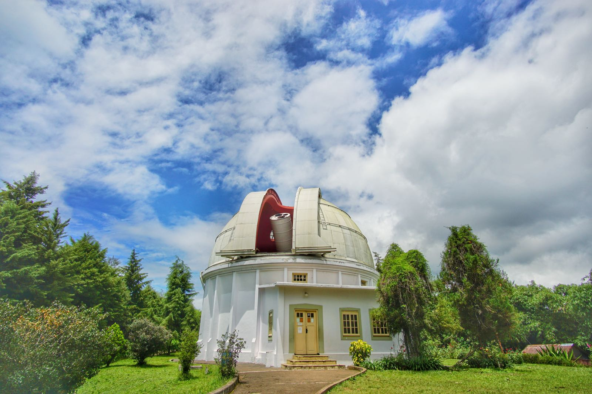
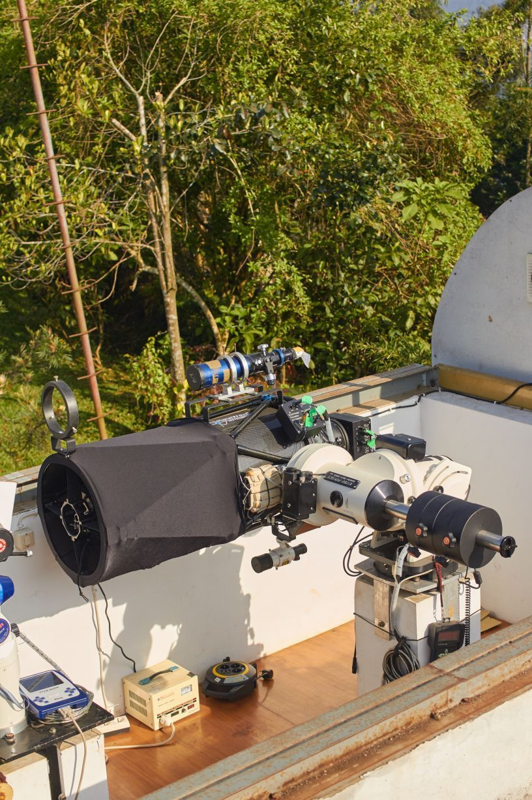

Teleskop Refraktor Ganda Zeiss

Satu-satunya gedung kubah di Observatorium Bosscha yang telah menjadi landmark Bandung utara selama lebih dari 85 tahun.
More Information >
Berbagai macam instrumen (Teleskop) yang digunakan dalam Observatorium Bosscha untuk mengamati dan mendokumentasikan kegiatan astronomi.
Gunakan formulir ini untuk menentukan informasi instrumen astronomi yang ingin ditelusuri.
Satu-satunya gedung kubah di Observatorium Bosscha yang telah menjadi landmark Bandung utara selama lebih dari 85 tahun.
More Information >
Teleskop yang terpasang di gedung surya ini dapat berjalan sepenuhnya secara otomatis dan beradaptasi terhadap kondisi langit dan lingkungan.
More Information >
Teleskop STEVia (Survey Telescope for Exoplanet and Variable star) adalah sistem teleskop baru di Observatorium Bosscha yang dibangun pada tahun 2013.
More Information >